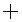

Le module Acquisition est le module principal d'acquisition d'images et de vidéos d'Ekos. Il permet l'acquisition d'image unique (aperçu), d'images multiples (file de séquence) et d'enregistrer des vidéos au format SER tout en gérant éventuellement une roue à filtres et un rotateur si ces périphériques sont disponibles.
Veuillez sélectionner le CCD/APN et la roue à filtres (si disponible) pour l'acquisition. Réglez la température du CDD et la configuration des filtres.
Caméra : sélectionnez la caméra CCD active. Si la caméra possède un guide, vous pouvez également le sélectionner ici.
Roue à filtres (RF) : sélectionnez le périphérique actif de roue à filtre. Si votre caméra possède une roue à filtres intégrée, le périphérique sera le même que la caméra.
Refroidissement : (dés)activez le refroidisseur. Vous pouvez régler la température souhaitée de la caméra si elle possède un refroidisseur. Cochez cette option pour forcer les réglages de température avant l'acquisition. Celle-ci ne débute que lorsque la température mesurée se trouve dans la plage de tolérance de température. La tolérance par défaut est de 0,1 degrés Celsius mais peut être modifiée dans les options du module d'Acquisition d'Ekos.
Configurez tous les paramètres d'acquisition comme détaillé ci-dessous. Une fois réglé, vous pouvez acquérir un aperçu en cliquant sur le bouton ou ajouter une tâche à la séquence.
Durée d'exposition : spécifie la durée d'exposition en secondes.
Filtre : spécifie le filtre désiré.
Nombre : spécifie le nombre d'images à acquérir.
Délai : spécifie la durée entre deux acquisitions en secondes.
Type : spécifie le type de trames CCD. Les options sont , , et .
ISO : spécifie la valeur ISO (seulement pour les APN).
Format : spécifie le format d'enregistrement des images. Pour tous les CCD, seule l'option est disponible. Pour les APN, vous pouvez enregistrer les images au format (c'est-à-dire RAW ou JPEG, mais préférez RAW) en plus du format .
Propriétés personnalisables : permet de régler les propriétés étendues disponibles dans la caméra pour la configuration des tâches.
Calibration : pour les trames Dark et Flat, vous pouvez spécifier des options additionnelles expliquées dans la section de la calibration des trames ci-dessous.
Trame : spécifie l'origine gauche (X), haute (Y), la largeur (W) et la hauteur (H) des trames du CCD. Si vous avez modifié la dimension des trames, vous pouvez la réinitialiser en cliquant sur le bouton .
Groupement de pixels : spécifie le groupement de pixels horizontal (X) et vertical (Y) (binning en anglais).
Beaucoup de caméras proposent des propriétés additionnelles qui ne peuvent pas être directement contrôlées dans les réglages de l'acquisition en utilisant les commandes communes. Les commandes d'acquisition décrites ci-dessus représentent les réglages les plus courants qui sont partagés par les différentes caméras mais chaque caméra est unique et peut proposer des propriétés étendues propres. Bien que vous puissiez utiliser le tableau de bord d'INDI pour régler les propriétés du pilote, il est important de pouvoir régler ces propriétés pour chaque tâche de la séquence. Quand vous cliquez sur le bouton , une boîte de dialogue apparaît divisée en Propriétés disponibles et Propriétés de la tâche. En déplaçant une Propriétés disponibles vers la liste des Propriétés de la tâche, sa valeur courante peut être enregistrée en cliquant sur le bouton . Quand vous ajoutez une tâche à la file d'attente des séquences, les valeurs des propriétés sélectionnées dans la liste des Propriétés de la tâche seront enregistrées.
La prochaine vidéo explique ce concept en détails avec un exemple concret :
Fonctionnalité des propriétés personnalisables
Les réglages qui spécifient le dossier d'enregistrement des images et la manière de générer des noms de fichier unique et également les modes de téléversement.
Cible : le nom de la cible à acquérir, par exemple M42. Peut être préchargée par le module Ordonnanceur ou par sélection dans KStars.
Format : la chaîne format définit l'emplacement et le nom du fichier des images acquises grâce à l'utilisation d'étiquettes réservées renseignées de l'élément sélectionné à l'heure d'enregistrement.
Une étiquette est identifiée par le caractère %. Toutes les étiquettes ont la forme d'une seule lettre ainsi qu'une description longue.
Du texte libre peur être inclus dans la chaîne format, sauf les caractères % et \. Le caractère d'emplacement / peut être utilisé pour définir des dossiers arbitraires.
Remarque : les étiquettes sont sensibles à la casse dans leur forme courte et longue.
Étiquettes réservées disponibles :
%f ou %filename : le nom du fichier de séquence .seq, sans extension.
%D ou %Datetime : l'heure et la date courante au moment de l'enregistrement. N'utilisez cette étiquette que dans la portion du nom de fichier du format, et non dans celle de l'emplacement.
%T ou %Type: le type de trame, par exemple 'Light', 'Bias', 'Dark', 'Flat'…
%e ou %exposure: la durée d'exposition en secondes.
%F ou %Filter: le nom du filtre actif.
%t ou %target: le nom de la cible.
%s* ou %sequence* : l'identifiant de la séquence d'images où * est le nombre de chiffres utilisés (1-9). Cette étiquette est obligatoire et doit être le dernier élément du format.
Bouton de navigation de dossier : ouvre une fenêtre permettant de choisir l'emplacement du dossier utilisé dans la chaîne Format. Utilisé lors de la première définition de la tâche d'acquisition.
Aperçu : affiche un aperçu du nom de fichier en fonction du format de chaîne défini et des configurations des autre tâches.
Les étiquettes réservées spécifiées par le fichier de séquence .seq ne peuvent être affichées que lorsque le fichier de séquence a été enregistré.
L'étiquette horaire est affichée avec l'heure système courante et sera remplacée par l'heure d'enregistrement de l'image.
L'étiquette de séquence est toujours affichée en tant que première image de la séquence et sera automatiquement incrémentée avec la progression des tâches.
Téléversement : spécifie comment les images doivent être téléversées.
Client : les images sont téléversées vers Ekos et enregistrées dans le dossier local spécifié ci-dessus.
Local : les images sont enregistrées en local sur l'ordinateur distant.
Les deux : les images sont enregistrées sur l'ordinateur distant et téléversées vers Ekos.
Si vous spécifiez ou , vous devez indiquer le dossier distant pour l'enregistrement des images. Par défaut, toutes les images sont téléversées vers Ekos.
À distance : si vous sélectionnez ou , vous devez indiquer le dossier distant d'enregistrement des images.
Aperçu : affiche un aperçu du nom de fichier résultant de la configuration de l'emplacement de la tâche. Le format du nom de fichier des enregistrements à distance est prédéfini (les étiquettes réservées ne peuvent être utilisées). Le numéro de la séquence de fichiers commence toujours à 1 et sera automatiquement incrémenté avec la progression de la séquence.
Les réglages des limites sont applicables à toutes les images dans la file d'attente des séquences. Quand une limite est dépassée, Ekos déclenchera l'action appropriée pour remédier à la situation comme expliqué ci-dessous.
Déviation de guidage : si cette option est cochée, la déviation maximale de guidage pour une exposition est appliquée. Si la déviation de guidage (mesurée en secondes d'arc) est dépassée, la séquence est interrompue. Elle reprendra dès que la déviation de guidage redeviendra inférieure à la limite.
Mise au point automatique si HFR > : si la mise au point automatique est activée dans le module de mise au point et qu'au moins une opération de mise au point automatique s'est terminée avec succès, vous pouvez indiquer la valeur maximale de HFR acceptable. Si cette option est activée, alors la valeur HFR est recalculée entre chaque acquisition ; si cette valeur dépasse la valeur limite acceptable, une mise au point automatique est déclenchée. En cas de succès, la séquence reprend, sinon elle est interrompue.
Retournement au méridien : si cela est géré par la monture, spécifie l'angle horaire limite (en heures) avant qu'un retournement au méridien soit déclenché. Par exemple si vous spécifiez la durée de retournement au méridien à 0,1 heure, alors Ekos attendra que la monture dépasse le méridien de 0,1 heure (6 minutes) pour déclencher le retournement au méridien. Ensuite Ekos réalisera un alignement en utilisant astrometry.net (si l'alignement est utilisé) et reprendra le guidage (s'il était démarré avant cette opération) et l'acquisition.
La file d'attente des séquences est la plate-forme principale du module d'acquisition d'Ekos. C'est l'endroit où vous planifiez et exécutez les tâches en utilisant le puissant ordonnanceur intégré. Pour ajouter une tâche, il suffit de sélectionner tous les paramètres des réglages de l'acquisition et du nommage de fichier comme indiqué ci-dessus. Ensuite, cliquez sur le bouton d'ajout  de la file d'attente des séquences pour l'ajouter à la file d'attente.
Vous pouvez ajouter autant de tâches que désirées. Bien que cela ne soit pas strictement nécessaire, il est préférable d'ajouter les tâches d'acquisition de Dark et de Flat après celles de Light. Une fois que vous avez terminé d'ajouter des tâches, cliquez simplement sur le bouton pour débuter l'exécution des tâches. L'état d'une tâche passe de Inactif à En progrès et enfin Complété une fois terminée. La file d'attente des séquences démarre ensuite automatiquement la prochaine tâche. Si une tâche est interrompue, elle peut être reprise. Pour mettre une tâche en pause, cliquez sur le bouton et la tâche sera arrêtée après que l'acquisition en cours soit terminée. Pour réinitialiser l'état de toutes les tâches, cliquez simplement sur le bouton de réinitialisation . Veuillez noter que cela réinitialise également le compteur de progression de toutes les images. Pour afficher un aperçu d'une image dans l'afficheur FITS de KStars, cliquez sur le bouton .
Les séquences peuvent être enregistrées dans un fichier au format XML d'extension .esq (Ekos Sequence Queue). Pour charger une séquence, cliquez sur le bouton . Veuillez noter que cela remplacera toute séquence déjà dans la file d'attente d'Ekos.
Important
Progression des tâches : Ekos est conçu pour exécuter les séquences sur plusieurs nuits si nécessaire. Ainsi, si l'option Se rappeler de la progression des tâches est activée dans les options d'Ekos, Ekos fera un scan du système de fichiers pour déterminer le nombre d'images déjà présentes et terminées et reprendra la séquence au point où il s'était arrêté. Si ce n'est pas le comportement désiré, vous pouvez simplement désactiver cette option.
Pour modifier une tâche, il faut double cliquer sur son nom. Remarquez comment le bouton d'ajout s'est modifié en un bouton coché . Faites vos changements dans le panneau gauche du module CCD et ensuite cliquez sur la coche pour appliquer. Pour annuler la modification, cliquez n'importe où dans un espace vide de la table de séquences.
Important
Modification des tâches actives : quand une acquisition est en cours ou quand l'ordonnanceur est actif, vous ne pouvez pas modifier la file de séquences ou un fichier .esq dans l'onglet d'acquisition. Toutefois, il existe un outil dans l'onglet de l'ordonnanceur qui permet de modifier les fichiers .esl ou en créer de nouveaux.
Si votre caméra gère les vidéos en direct, vous pouvez cliquer sur le bouton Vidéo en direct pour débuter la diffusion en continu. La fenêtre de diffusion permet l'enregistrement et l'extraction de trames de la vidéo.
Fonctionnalité d'enregistrement
La vue « Live view » fournit un outil de superposition d'images très utile pour la collimation. Le bouton en croix permet de le (dés)activer.

Superposition de la collimation
Ce bouton ouvre une fenêtre où il est possible de définir de manière flexible des ellipses (cercles inclus), des rectangles et des lignes de toutes tailles, d'agir sur des points d'ancrages permettant de régler les effets de dessin. Chaque élément possède sa propre taille, ses décalages, ses répétitions et ses largeurs de traits et de couleurs (transparence inclue).

Options pour la superposition de la collimation
Les images sont affichées dans l'afficheur FITS de KStars ainsi que dans l'écran de résumé. Vous pouvez spécifier les options d'affichage de l'afficheur.
Dark automatique : vous pouvez soustraire automatiquement un Dark d'une image en cochant cette option. Veuillez noter que cette option n'est disponible que lors de l'utilisation de l'aperçu. Il n'est pas possible de l'utiliser en mode traitements par lots.
Effets : filtre d'amélioration d'une image à appliquer après son acquisition.
Les rotateurs de champs sont gérés par INDI et Ekos. L'angle du rotateur est l'angle rapporté par le rotateur mais n'est pas nécessairement l'angle de position. Un angle de position de zéro indique que le haut d'une trame (repéré par une petite flèche) pointe directement vers le pôle. L'angle de position est exprimé en degrés de l'est par rapport au nord, ainsi, un angle de position de 90 indique que le haut d'une trame pointe à 90 degrés (sens antihoraire) du pôle. Quelques exemples d'angle de position d'étoiles binaires.
Afin de calibrer l'angle de position (AP), prenez une image et resolvez-là dans le module d'alignement d'Ekos. Un décalage et un coefficient multiplicateur sont appliqués à l'angle brute pour calculer l'angle de position. La boîte de dialogue du rotateur d'Ekos permet un contrôle direct de l'angle brut et de l'angle de position. Le décalage et le coefficient multiplicateur peuvent être modifiés manuellement afin de synchroniser l'angle brute du rotateur avec l'angle de position actuel. Cochez Synchroniser CdV vers AP pour effectuer la rotation de l'indicateur du champ de vision courant sur la carte du ciel avec la valeur d'angle de position.
Réglages du rotateur
On peut assigner à chaque tâche d'acquisition un angle de rotation différent mais soyez conscient que cela peut causer l'interruption du guidage puisque l'étoile guide sera perdue pendant la rotation. Ainsi, pour la plupart des séquences, l'angle du rotateur est identique pour toutes les tâches d'acquisition.
Pour les trames de champ uniforme (Flat), vous pouvez régler les options de calibration pour automatiser le processus. Ces options sont conçues pour faciliter l'acquisition automatique des trames de champ uniforme. Elles peuvent également être utilisées pour l'acquisition des trames Dark et Bias. Si votre caméra possède un obturateur mécanique, il n'est pas nécessaire de régler ces options sauf si vous souhaitez fermer le bouchon antipoussière pour vous assurer qu'aucune lumière ne passe dans le tube optique. Pour les Flats, vous devez spécifier la source de lumière, puis une durée d'exposition. La durée peut être spécifiée soit manuellement soit fondé sur un calcul d'ADU (Analog Digital Unit ou pas de quantification).
Source de lumière pour le Flat
Manuel : la source de lumière est manuelle.
Bouchon antipoussière avec source de lumière intégrée : pour l'utilisation de ce type d'appareil (p. ex. FlipFlat). Pour les trames Dark et Bias, veillez à fermer le bouchon antipoussière avant de commencer. Pour les trames Flat, fermez le bouchon antipoussière et allumez la source de lumière.
Bouchon antipoussière avec source de lumière externe : pour l'utilisation de bouchon antipoussière avec source de lumière externe. Pour les trames Dark et Bias, veuillez à fermer le bouchon antipoussière avant de commencer. Pour les trames Flat, fermez le bouchon antipoussière et allumer la source de lumière. L'emplacement de la source externe de lumière pour les Flats est présumée être la position de parcage.
Mur : la source de lumière est un panneau placé contre un mur. Spécifier les coordonnées d'azimut et d'altitude du panneau et la monture pivotera dans cette direction avant de débuter l'acquisition des trames de Flats. Si le panneau de lumière est contrôlable par INDI, Ekos se chargera de l'allumer et de l'éteindre.
Aube/Crépuscule : non géré actuellement.
Durée d'exposition de l'acquisition de Flat
Manuelle : la durée est spécifiée dans la file d'attente de la séquence.
ADU : la durée est variable jusqu'à que la valeur ADU soit atteinte.
Avant le début de la procédure d'acquisition de la calibration, vous pouvez demander à Ekos de parquer la monture et/ou le dôme. Selon la sélection de la source de Flat ci-dessus, Ekos va utiliser la source de lumière appropriée pour les Flats avant de commencer l'acquisition des trames de Flat. Si une valeur ADU est spécifiée, Ekos commence par prendre une série d'images pour établir la courbe nécessaire pour atteindre la valeur ADU souhaitée. Une fois que cette valeur est calculée, une nouvelle image est prise et l'ADU est recalculée jusqu'à ce que la valeur souhaitée soit atteinte.
Le calculateur d'exposition est une implémentation d'un traitement de calcul présenté par le Dr. Robin Glover en 2019. Il cherche à établir le temps d'exposition en considérant deux sources de bruit d'une image : le bruit de lecture de l'appareil et le bruit de la pollution lumineuse. Les effets du bruit thermique de l'appareil sur les images ne sont pas pris en considération dans ce calcul. (Remarque : depuis sa présentation en 2019, le Dr. Glover a amélioré son calcul en tenant compte de l'efficacité quantique du capteur et la taille des pixels. Pour le moment, KStars ne tient pas compte de ces améliorations).
L'idée principal du calcul est de fournir un temps d'exposition suffisamment long pour que le bruit de lecture de l'appareil soit largement dépassé par le signal provenant de la cible mais pas trop long pour éviter que le bruit de la pollution lumineuse ne dépasse pas le signal de la cible.
Cette implémentation ne considère pas la force (magnitude ou flux) de la cible, ni d'autres facteurs qui pourraient inciter l'astrophotographe à choisir une durée d'exposition différente. Ces autres facteurs peuvent inclure : les exigences en terme de stockage et le temps supplémentaire de post-traitement dû au nombre important de trames de faible durée d'exposition, les impacts de facteurs externes qui se produiront pour les très longues expositions tels que les performances de suivi et de guidage, les modifications des conditions météorologiques, les intrusions du traffic aérien ou encore le passage de satellites artificiels.
Les approches à l'imagerie peuvent considérablement varier quant au choix des durées d'exposition et le nombre de trames utilisées pour l'intégration. Une approche largement acceptée pour l'imagerie d'objets du ciel profond implique de longues durées d'exposition qui nécessitent un bon guidage, des conditions de visibilité excellente et emploierait typiquement l'utilisation de filtres pour réduire les effets de la pollution lumineuse. À l'autre extrême, des approches utilisant des techniques rapides (nommées communément « imagerie chanceuse ») en prenant des centaines voir des milliers de trames de durée très courtes dans l'espoir d'éliminer les effets de la pollution lumineuse, ainsi que de mauvaises conditions de visibilité et de guidage. Les choix des valeurs des paramètres du calculateur d'exposition dépendront de l'approche utilisée.
Valeurs en entrée du calculateur d'exposition
Qualité du ciel : le règle la mesure de la magnitude par secondes d'arc au carré du fond du ciel.
La plage de valeurs pour la qualité du ciel va de 22 pour les ciels les plus noirs à 16 pour les plus brillants (principalement pollué par la lumière). L'échelle de magnitude est non-linéaire ; c'est une échelle logarithmique basée sur la racine cinquième de 100. Ainsi, 5 pas sur cette échelle représente un changement en magnitude d'un facteur 100. (Une qualité du ciel de 17 est 100 fois plus lumineuse qu'une qualité du ciel de 22. Chaque entier représente un changement d'environ 2.512.). Voir Wikipedia Sky Brightness et Pollution lumineuse.
Toute lumière diffusée dans le fond du ciel est considérée comme de la pollution lumineuse quelque ce soit sa source, ainsi la « lumière » de la lune peut être considérée comme de la pollution lumineuse « naturelle ». Mais les conditions météorologiques peuvent également impacter la qualité du ciel ; ainsi, l'humidité ou la couverture nuageuse peuvent réfléchir ou diffuser toute source de lumière à travers l'atmosphère.
Un appareil de mesure de la qualité du ciel, en anglais Sky Quality Meter (SQM) permet d'obtenir la mesure la plus précise de la qualité du ciel durant une session d'imagerie mais d'autres sources sur Internet, comme www.lightpollutionmap.info ou www.clearoutside.com permettent d'obtenir une valeur estimée. Mais ces sources sur Internet ne tiennent en général pas compte des effets de la « lumière » de la Lune et des conditions météorologiques locales. Elles ne représentent donc que le cas idéal d'une nuit sans nuage et à la nouvelle Lune.
Si une valeur provenant d'une carte de pollution lumineuse est utilisée comme valeur d'entrée de la qualité du ciel mais que la session d'imagerie est réalisé durant une lune partielle, il faudra diminuer cette valeur dans le calculateur d'exposition. L'impact de la « lumière » de la lune peut être très important ; par exemple, pour une valeur de 19.63 sur une carte, une lecture avec un appareil de mesure durant une lune croissante juste avant la demi-lune (âge la lune de 5.4 et magnitude dans KStars de -10), donne un résultat au zénith de 18.48, ce qui est bien plus brillant. De même, par une lune gibbeuse, juste après la pleine lune (âge la lune de 12.4 et magnitude dans KStars de -12), une lecture donne 15.95, ce qui est encore plus brillant.
La valeur de la qualité du ciel a un impact radical sur le temps d'exposition calculé en raison de l'échelle logarithmique. Une image prise depuis un endroit avec forte pollution lumineuse (donc une qualité du ciel basse), et particulièrement si aucun filtre n'est utilisé, aboutira à des durées d'exposition très faibles pour prévenir la pollution lumineuse de noyer le signal de la cible. Au contraire, une image prise dans d'excellentes conditions de qualité du ciel, impliquera des durées d'exposition de plusieurs heures.
Rapport F/D : le sélecteur pour le règle la valeur à partir du train optique qui est nécessaire pour l'évaluation de la facilité à obtenir la lumière.
Cette valeur a un effet direct sur le calcul de la durée d'exposition. Un petit rapport est considéré comme une « optique rapide » puisqu'il permet d'obtenir beaucoup plus de lumière qu'une optique de rapport plus grand. Ainsi la durée d'exposition sera diminuée avec une optique de rapport faible et augmentée avec une optique de rapport plus grand.
Il peut être intéressant d'ajuster légèrement cette valeur pour compenser le rendement ou les obstructions dans les optiques.
Prenons par exemple deux optiques de même rapport F/D, un réfracteur (sans obstruction) et un réflecteur (avec une obstruction dû au miroir secondaire) ; ces deux optiques seraient traitées de manière équivalentes dans les calculs. On pourrait compenser l'efficacité optique différente en tenant compte du fait qu'un réfracteur a une efficacité d'environ 94% alors que celle d'un réflecteur est d'environ 78%.
La compensation sera calculée pour un réfracteur ainsi : (rapport F/D) / 0.94.
Et pour un réflecteur : (Rapport F/D) / 0.78.
Ces ajustements augmentent un tout petit peu le rapport F/D et ainsi réduisent un peu l'efficacité de capture de lumière dans les calculs.
Largeur de bande du filtre : le sélecteur règle la valeur de largeur de bande (en nanomètres) et devrait être réduit de la valeur par défaut de 300 quand un filtre est ajouté au train optique. L'ajout de filtres dans le train optique affectera grandement la durée d'exposition. La plage de valeur part de 300 pour une imagerie sans filtre jusqu'à 2.8 pour un filtre à bande très étroite.
Les filtres tombent généralement dans deux catégories : bande simple et multi-bande. La largeur de bande pour un filtre à bande simple devrait être relativement simple à déterminer ou à estimer. En général, un filtre rouge, vert ou bleu possède une largeur de 100 nanomètres. La documentation des filtres multi-bande contient généralement la largeur de bande (habituellement entre 3 et 12 nm). Mais les largeurs de bande des filtre multi-bande tels que les filtres anti-pollution lumineuses ou ceux spécifiquement conçus pour les nébuleuses peuvent être bien plus difficiles à déterminer puisque leur profil de transmission sont bien plus complexes.
Les filtres ne sont pas 100% efficaces même dans les bandes qu'ils sont censés utiliser. Par conséquent, l'utilisateur du calculateur souhaitera légèrement réduire la valeur de la largeur de bande pour compenser cela. Par exemple, pour un filtre qui est censé posséder une largeur de bande de 100 nm mais dont l'efficacité de transmission n'est que de 92%, une valeur de 92 représentera probablement mieux ce filtre et conduira à une durée d'exposition un peu plus précise.
La valeur de la largeur de bande du filtre a un effet inversement proportionnel à la durée d'exposition. Une image prise sans filtre utilisera la valeur de 300 (ce qui représente le spectre visible de 300 nanomètres) et produira le temps d'exposition le plus court. À l'inverse, l'utilisation d'un filtre très étroit (par exemple 3 nanomètres) produira une durée d'exposition bien plus longue.
Appareil : le calcul de la durée d'exposition requiert de connaître la valeur du bruit de lecture de l'appareil. Ce bruit apparaît à la fin d'une exposition et provient du fait que l'appareil mesure des valeurs analogiques de la tension des pixels et les convertit ensuite en valeurs digitales. Ce bruit de lecture n'est pas affecté par la durée d'exposition.
Les appareils ont des capteurs de deux types : CCD (Charge Coupled Device) et CMOS (Complementary Metal-Oxide Semiconductor). La différence principale en ce qui concerne le calcul de la durée d'exposition est que les capteurs CCD ne possèdent pas de réglages du gain qui affecte le bruit de lecture ; ainsi, les capteurs CCD n'ont qu'une seule valeur constante pour leur bruit de lecture. Les capteurs CMOS ont un gain variable (ou valeur ISO) et une modification de ce paramètre affecte en général le bruit de lecture.
Le calculateur d'exposition repose sur la connaissance des données de l'appareil pour pouvoir accéder à une valeur adéquate du bruit de lecture à utiliser dans le calcul. La liste déroulante permet de choisir le fichier approprié à l'appareil. Pour les appareils CCD, le fichier ne contient qu'une seule valeur mais pour les appareils CMOS, le fichier inclut une table (ou plusieurs) de valeurs qui associe le gain ou l'ISO à un bruit de lecture. No soyez pas déconcerté par le « CCD » apparaissant dans le nom de beaucoup d'appareils dédiés à l'astrophotographie car la plupart utilisent des capteurs CMOS.
Les fichiers de données des appareils inclus dans KStars contiennent des valeurs traduites de la documentation techniques des constructeurs. Toutefois, les valeurs réelles du bruit de lecture peuvent varier des valeurs publiées ; ainsi, un utilisateur voudra éventuellement utiliser un outil dédié pour déterminer les vraies valeurs de bruit de lecture de leur appareil. Le Dr Glover fournit un outil d'analyse de capteur dans son outil SharpCap Sensor Analysis. Les données obtenues par cet outil peuvent être utilisées pour créer un fichier personnalisé de données liées à un appareil et pourra être ensuite utilisé avec le calculateur d'exposition de KStars.
Mode lecture : certains appareils de la marque QHY ont la possibilité de fonctionner en plusieurs modes. Ces modes modifient les valeurs de bruit de lecture et ainsi les fichiers de données de ces appareils incluent plusieurs tables de bruit de lecture. Lors de l'utilisation de ce type d'appareils multi-modes, la liste déroulante deviendra active et permettra à l'utilisateur de choisir la table correspondante au mode utilisé par l'appareil pour l'imagerie.
Graphique de la durée d'exposition : le calculateur affiche un graphique des durées d'exposition potentielles déterminées par les paramètres d'entrée. Dans le cas des appareils à capteur CMOS, ce graphique ressemblera aux données de lecture de l'appareil mais sera transformé en durée d'exposition en fonction des différents gains ou ISO possibles. Pour les appareils CCD, le graphique sera une simple bar puisque le bruit de lecture est invariable.
Gain / ISO : les appareils ayant un capteur CMOS, une valeur de gain ou d'ISO peut être sélectionnée. Un bouton de contrôle de gain permet la sélection de gain et une liste déroulante permet ce choix pour les APN. L'ajustement de ces valeurs déplace un indicateur situé latéralement du graphique de durée d'exposition pour indiquer l'effet de ces valeurs sur la durée d'exposition.
Les appareils à capteur CMOS ont tendance à avoir un bruit de lecture élevé pour des valeurs de gain/ISO faibles, le bruit de lecture diminuant avec une augmentation du gain/ISO. L'utilisateur sera ainsi tenté de monter le gain/ISO pour réduire le bruit de lecture. Mais la pleine capacité de l'appareil est typiquement plus élevée pour des les gains les plus faibles. Les pleines capacités les plus élevées fournissent une plage dynamique de l'image plus large.
Le choix d'un gain/ISO dépend de la technique d'imagerie utilisée. Pour les longues durées d'exposition (typiquement utilisées pour l'imagerie du ciel profond), une valeur de gain/ISO faible est préférée afin d'obtenir une plage dynamique plus grande. Mais pour l'imagerie à très courte pose, la réduction du bruit de lecture devient si critique qu'elle devient la priorité et il devient ainsi préférable d'utiliser une valeur de gain/ISO élevée.
Certains appareils présentent une courbe de bruit de lecture en fonction du gain très lisse, alors que d'autres en ont une en forme d'escalier (et d'autres anomalies). Ces derniers résultent en général de modes de basculement de l'électronique interne. Dans ces cas, il est préférable de choisir une valeur correspondant au bas d'une marche. Il y aura ainsi un bruit réduit et permettra une durée d'exposition plus courte sans perte significative de la plage dynamique comparée à un choix de gain situé sur le haut de la marche. Mais il faut faire attention pour les valeurs « près » d'une marche. Certains posts sur des forums spécialisés indiquent que les données de bruits de lecture fournies par les constructeurs ne seraient pas tout à fait exactes. Le basculement réel du bruit de lecture pourrait être légèrement plus élevé ou plus faible et il est ainsi recommandé d'éviter de choisir une valeur qui se trouve sur une marche.
Évitez d'utiliser une valeur de gain près d'une marche quand vous vous basez sur la documentation du constructeur.
Choisissez plutôt une valeur éloignée d'une marche
% d'augmentation du bruit : le sélecteur est un paramètre utilisé dans l'équation du Dr Glover. Cette valeur modifie l'équilibre relatif entre les deux sources de bruit de l'image. Le Dr Glover recommande d'utiliser une valeur de 5% mais de la diminuer à 2% lorsque la durée d'exposition est considérée trop courte.
Augmentation signifie ici une augmentation relative entre le bruit de lecture et celui de la pollution lumineuse. Cela peut paraître contre-intuitif, mais augmenter cette valeur diminue la durée d'exposition, diminuant ainsi le bruit de la pollution lumineuse (diminuant aussi le signal de la cible), ainsi augmenter signifie une augmentation relative de l'effet de bruit de lecture comparée au bruit de la pollution lumineuse. Au contraire, diminuer cette valeur augmente la durée d'exposition et ainsi le bruit de la pollution lumineuse (augmentant aussi le signal de la cible), ce qui a pour effet de réduire l'impact du bruit de lecture.
L'implémentation du calculateur permet de choisir des valeurs de « % d'augmentation du bruit » dans une très grande plage pour permettre à l'utilisateur d'expérimenter cet outil. Mais il devra s'attendre à obtenir des effets indésirables s'il teste avec des valeurs trop grandes. En forçant pour obtenir des durée d'exposition faibles, l'effet du bruit de lecture risque de devenir trop important et réduire ainsi la qualité des images. Au contraire, il risque d'augmenter l'effet de la pollution lumineuse.
Ce paramètre dépend également de la technique d'imagerie utilisée. Pour la technique d'imagerie rapide, il faudra certainement forcer la durée d'exposition vers le bas, typiquement vers des durée sous la seconde, ce qui implique d'augmenter drastiquement ce paramètre.
Résultats du calculateur
Durée d'exposition (s) : spécifie la durée d'exposition.
Électrons de pollution : le nombre calculé d'électrons de pollution par pixel impactant la durée d'exposition.
Bruit de l'image : le bruit calculé de la pollution lumineuse impactant la durée d'exposition.
Bruit total : le bruit calculé provenant de la pollution lumineuse et du bruit de lecture impactant la durée d'exposition.
Important
Interprétation du rapport durée d'exposition sur bruit total : ce nombre peut être interprété comme une mesure de la qualité potentielle d'une durée d'exposition. Les durées d'exposition courtes contiennent beaucoup de bruit par rapport à la durée d'exposition, et ainsi seront de moindre qualité. Elles restent viables mais il faudra un nombre proportionnellement trop important de prises à empiler pour obtenir une image de qualité acceptable.
Information sur l'empilement des images
Cette valeur informe sur l'effet bénéfique d'empiler les images sur l'acquisition du signal de la cible. Le résultat est une courbe indiquant la qualité de l'empilement des images en fonction du nombre d'images, la qualité diminuant avec le nombre d'images.
Idéalement, un rapport signal sur bruit (SNR) devrait être utilisé pour mesurer le niveau de qualité des images, mais le calculateur ne permet pas de reconnaître la force du signal d'une image cible et ne peut ainsi pas calculer ce rapport. Le niveau de qualité dans le calcul d'empilement est la durée d'intégration en secondes divisée par le bruit. Ce rapport « Durée/bruit » > peut être considéré comme une analogie grossière du rapport signal sur bruit. Mais l'utilisateur doit garder en tête que le rapport « Durée/bruit » n'est pas une mesure absolue de la qualité de l'empilement des images de toutes les cibles puisque la force du signal (magnitude ou flux) ne fait pas partie du calcul.
: un tableau fournit les détails de l'empilement en fonction du nombre d'heures planifiée pour l'imagerie.
Ce tableau fournit une indication rapide pour trouver le nombre idéal de trames à utiliser pour un nombre d'heures donné pour une session d'imagerie. Mais certaines étapes qui consomment beaucoup de temps ne sont pas inclues dans le calcul de la durée d'exposition. Par exemple, les appareils connectés via un câble USB prennent beaucoup de temps à transmettre les données. Ou encore le décalage automatique entre les prises. Ces étapes ajoutent du temps au processus d'imagerie et ne sont pas inclues dans le calcul.
La colonne tout à droite indique le rapport « Durée/bruit » de l'image empilée qui sera produite.
: un graphique interactif permet à l'utilisateur de visualiser les changements relatifs de la qualité potentielle des images empilées en fonction du nombre de trames utilisées pour l'empilement. En faisant varier ce rapport, le nombre de trames sera recalculée pour que l'image empilée atteigne ce rapport « Durée/bruit ».
Lors du choix du rapport Durée/Bruit pour le calcul du nombre de trames idéal à empiler, l'utilisateur souhaitera considérer le changement incrémental à la qualité potentielle de l'image d'une trame supplémentaire. Pour l'aider, l'outil inclut un calcul de la pente du point sélectionné sur la courbe de la durée en fonction du bruit (cette valeur est représentée par un symbole delta sur l'interface graphique). Ce delta représente la variation dans la qualité potentielle en ajoutant ou en soustrayant une trame.
Comme on peut s'y attendre, pour des petites valeurs du rapport Durée/Bruit, le delta sera relativement élevé, et ainsi l'ajout d'une trame aura un impact important sur l'image empilée. Mais en augmentant le rapport Durée/Bruit, davantage de trames seront inclues dan l'empilement et la valeur du delta va diminuer, indiquant que l'ajout de plus de trames devient de moins en moins intéressant.
La valeur par défaut pour le rapport Durée/Bruit est de 80. Cette valeur de devrait pas être considérée comme une valeur optimale. Elle a simplement été choisie comme une valeur moyenne. L'utilisateur doit tenir compte de plusieurs facteurs pour l'ajuster. 1) La brillance de l'objet cible, 2) le rapport Durée/Bruit des trames calculées et 3) la contrainte de temps pour la session d'imagerie et de traitement, ainsi que de la taille du médium d'enregistrement des images.
Les cibles brillantes (par exemple la nébuleuse d'Orion de magnitude 4) fournissent un signal relativement fort. Pour de telles cibles, le rapport Durée/Bruit peut être réduite et le calcul des trames produira toujours une images avec un très bon rapport Signal/Bruit. Les cibles plus faibles (par exemple le Bouclier de Thor de magnitude 11) nécessitent un rapport Durée/Bruit plus élevé pour compenser le signal relativement faible.
Selon les différentes valeurs en entrée et les conditions d'imagerie, la qualité potentielle peut grandement varier. Dans des conditions de qualité de ciel mauvaise, la durée calculé des trames sera naturellement courte pour éviter l'effet important de bruit venant de la pollution lumineuse. Si la durée d'imagerie et de traitement, ainsi que la taille d'enregistrement des images sont des paramètres importants pour l'utilisateur, une augmentation du rapport Durée/Bruit sera nécessaire pour réduite la quantité de trames. À l'inverse, quand les conditions sont bonnes et que le rapport résulte en des trames de longues durées par rapport au bruit calculé (dans l'imagerie à filtre étroit par exemple), le résultat sera des trames avec un rapport Durée/Bruit très grand. Dans ce cas, la valeur par défaut de 80 conduira à peu de trames pour l'empilement. Mais la valeur delta sera plutôt haute, indiquant qu'augmenter le rapport Durée/Bruit améliorera de beaucoup la qualité potentielle de l'image empilée.
L'intérêt d'utiliser le rapport Durée/Bruit comme paramètre d'entrée pour le calcul du nombre idéal de trames est de compenser la différence de bruit relative lors de l'utilisation de trames de durée différentes. Les trames de petites durées ont un rapport Durée/Bruit plus petit et possède ainsi une moindre capacité à améliorer l'image empilée. Ainsi un nombre disproportionné de courtes expositions est nécessaire pour obtenir un rapport Durée/Bruit défini de l'image empilée.
Prenons l'exemple du calcul du nombre de trames nécessaires en comparant deux durées de trames différentes : une trame de 300 secondes et une trame de 30 secondes. Celle de 300 secondes a un rapport calculé de 22.1 résultant en un rapport Durée/Bruit de 13.6. Quand le paramètre « % d'augmentation du bruit » est augmenté pour forcer la durée d'exposition à 30 secondes, on obtient une durée calculée de 9.47, ce qui donne un rapport Durée/Bruit de 3.2. Celle de 300 secondes a une qualité potentielle légèrement supérieure que celle de 30 secondes. On utilise le rapport Durée/Bruit par défaut de 80.
Pour l'empilement des trames de 300 secondes, on trouve que 34 trames sont nécessaires pour obtenir le rapport Durée/Bruit de 80. Ce qui donne une durée totale d'exposition de 2.83 heures.
Pour l'empilement des trames de 30 secondes, on trouve que 637 trames sont nécessaires pour obtenir le rapport Durée/Bruit de 80. Ce qui donne une durée totale d'exposition de 5.31 heures avec ces trames plus courtes pour obtenir le même rapport Durée/Bruit de l'image empilée.